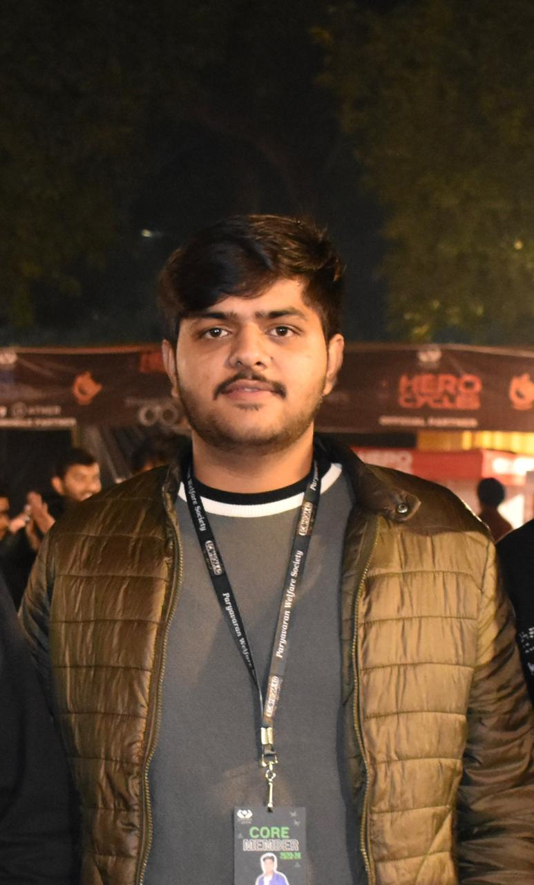

Akshit

Skills:
- Programming Languages: Python, C, C++
- Front-end Technologies: HTML,CSS,JavaScript,Bootstrap,jQuery,ReactJS
- Back-end Technologies: Node.js,Express.js
- Soft Skills: Teamwork,Project Management,Effective Communication,Leadership
Eductaion:
- Bachelor of Engineering in Computer Engineering with CGPA of 7.74 from Thapar Institute of Engineering & Technology,Patiala,Punjab
- Secondary Education with 93.8% and Senior Secondary Education with 96.2% from DAV Centenary Public School,Jind,Haryana
Projects:
Positions of Responsibility:
- Paryavaran Welfare Society, TIET
- Developed and executed detailed marketing strategies to promote the society’s events, leveraging diverse channels such as social media, email campaigns, and campus promotions.
- Partnered with student organizations and campus departments to expand event outreach and boost participant engagement.
- Managed and implemented targeted advertising campaigns, overseeing budget allocation and monitoring campaign performance to maximize resource efficiency.
- Pratigya Abhiyan, TIET
- Collaborated with educators and volunteers to design and implement effective teaching strategies, adapting to the dynamic needs of students and ensuring tailored educational experiences.
- Provided individualized mentoring and academic support, enhancing student confidence and aiding in the achievement of their educational objectives.
- Developed and executed a comprehensive extracurricular program, engaging over 200 participants each semester, which promoted community involvement and improved student retention rates by 15.
Other: